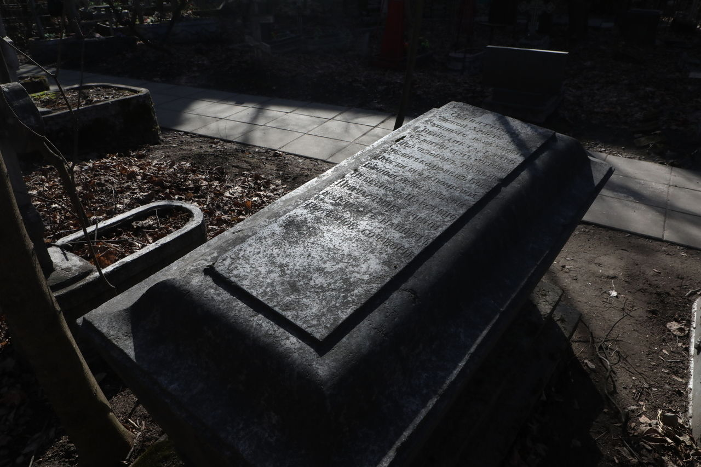
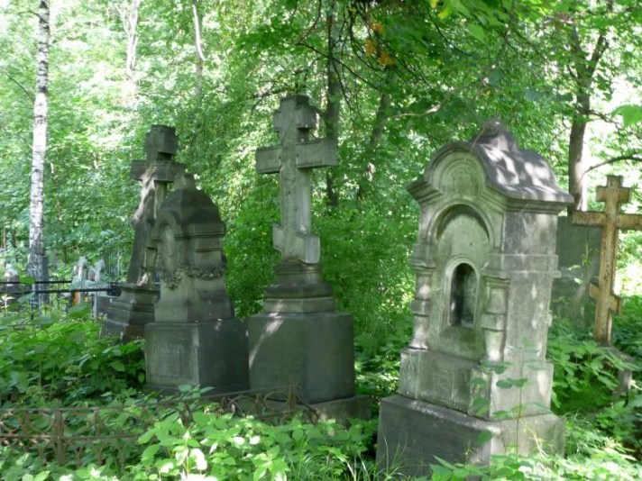
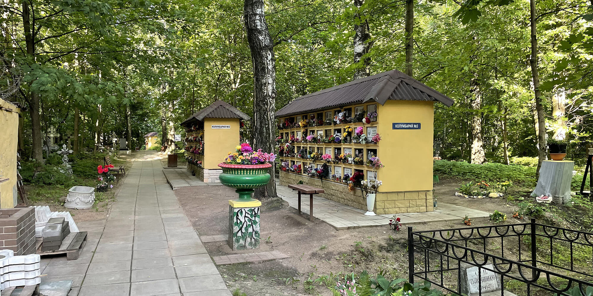
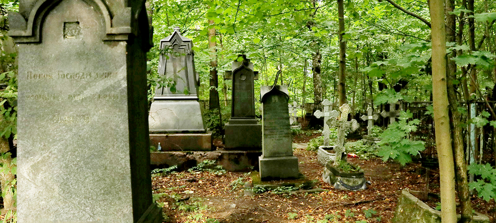

Малоохтинское кладбище

Легенда
Малоохтинское называют самым мистическим кладбищем Петербурга. Говорят, по ночам здесь можно увидеть зловещее зеленоватое свечение над могилами, густой туман, возникающий из ниоткуда, и жуткие силуэты.

Особую славу месту приносят истории о купеческой династии Скрябиных. Поговаривают, что основатель рода, И. М. Скрябин, занимался чёрной магией и колдовством. За это его род был проклят: эпидемия холеры в один год выкосила всех наследников по мужской линии, а на большинстве надгробий стоит зловещая дата — 1849 год. Якобы призрак купца-чернокнижника до сих пор бродит среди могил.

Самая известная городская легенда о кладбище датируется 1960-ми годами. Трое молодых людей, распивавших алкоголь на скамейке, столкнулись с призраком, который «жутко вонял трупом» и протягивал им пустой стакан. Дружинники, прибывшие на место, изъяли посуду. Экспертиза показала, что отпечатки пальцев на стакане принадлежали давно убитому и похороненному на другом кладбище бандиту. Рассказывают также о «кладбище алхимиков» и оборотне, растерзавшем животных в 1995 году.
Что было на самом деле
Кладбище было открыто в XVIII веке для старообрядцев-поморцев, которых Пётр I пригласил строить город. Репутацию «нехорошего» места оно получило из-за того, что здесь действительно хоронили самоубийц и нецерковных людей (старообрядцев часто путали с язычниками).

Семья Скрябиных — реальная купеческая династия (к этому роду, кстати, принадлежал и Вячеслав Молотов). Легенда о «внезапной смерти» имеет под собой основу: совпадение дат 1849 года могло быть связано с реальной эпидемией, а не проклятием. Здание бывшей богадельни долгое время было жилым (коммуналкой), поэтому «странные огни» легко объясняются бытом. Байка про призрака с бутылкой — классическая страшилка, кочующая по всем некрополям страны, а нумерованные кирпичи и упадок сил может быть следствием внушения и запущенного состояния погоста.
← Назад к карте